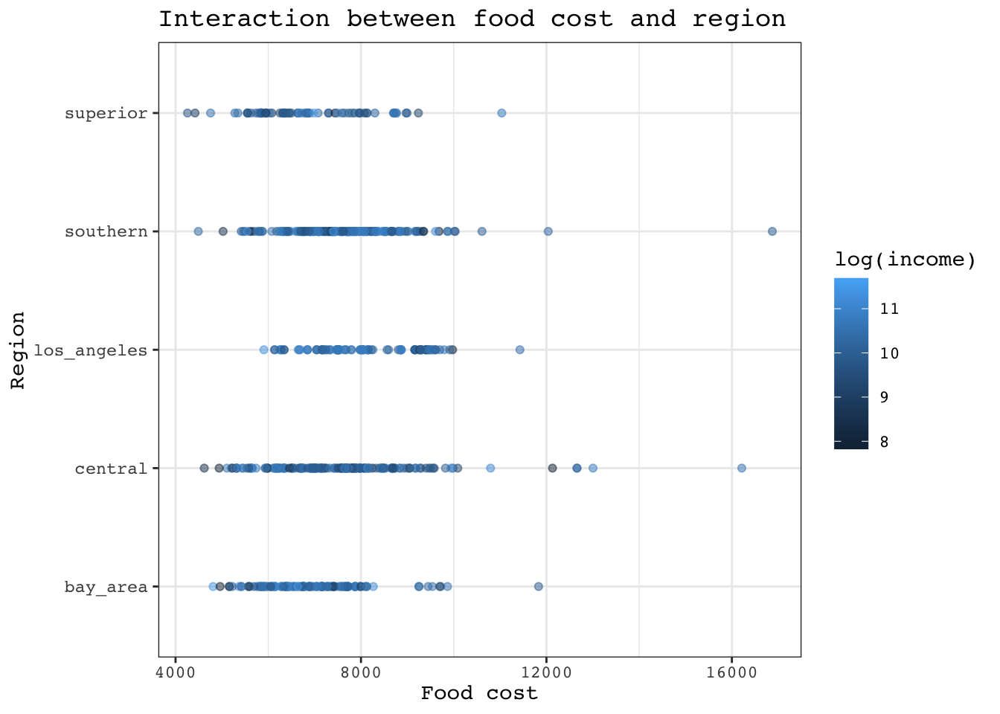

library(tidyverse)
library(ggplot2)
library(here)
library(kableExtra)
library(car)
library(broom)Analysis of food costs in female-headed households
food <- read_csv(here("data","food_affordability_2006_2010.csv"))
counties <- read.csv(here("data","california_counties.csv"))Data Cleaning
Drop NAs for median income and visualize min and max to see if outliers must be removed
food <- food %>%
filter(!is.na(median_income)) %>% # removed all median_income NAs as they are crucial for lm
select(-region_name) # removed MPO region names# Create a histogram for median_income
income_hist <- ggplot(food, aes(x = median_income)) +
geom_histogram(binwidth = 5000, fill = "firebrick2", color = "white") +
labs(title = "Histogram of median income",
x = "Median income",
y = "Frequency") +
theme_bw() +
theme(text = element_text(family = "courier"),
panel.background = element_rect(colour = "skyblue"))
income_histcost_hist <- ggplot(food, aes(x = cost_yr)) +
geom_histogram(binwidth = 5000, fill = "firebrick2", color = "white") +
labs(title = "Histogram of food cost",
x = "Food cost",
y = "Frequency") +
theme_bw() +
theme(text = element_text(family = "courier"),
panel.background = element_rect(colour = "skyblue"))
cost_histsummary(food$cost_yr) Min. 1st Qu. Median Mean 3rd Qu. Max.
3550 6647 7247 7347 7976 16872 summary(food$median_income) Min. 1st Qu. Median Mean 3rd Qu. Max.
2500 20219 30371 35986 44083 250000 food <- food %>%
filter(median_income < 110000) %>%
mutate(log_cost = log(cost_yr)) %>%
mutate(log_income = log(median_income))Reclassify counties into 5 regions, not 15
superior <- c("Butte","Colusa","Del Norte","Glenn","Humboldt","Lake","Lassen","Mendocino","Modoc","Nevada","Plumas","Shasta", "Sierra","Siskiyou","Tehama","Trinity")
central <- c("Alpine","Amador","El Dorado","Fresno","Inyo","Kings","Madera","Mariposa","Merced","Mono","Placer","Sacramento","San Joaquin","Stanislaus","Sutter","Yuba","Tulare","Tuolumne","Yolo", "Calaveras")
bay_area <- c("Almeda","Contra Costa","Marin","Monterey","Napa","San Benito","San Fracisco","San Mateo","Santa Clara","Santa Cruz","Solano","Sonoma")
southern <- c("Imperial","Kern","Orange","Riverside","San Bernardino","San Diego","San Luis Obispo","Santa Barbara","Ventura")
los_angeles <- "Los Angeles"
region_mapping <- data.frame(
county_name = c(superior, central, bay_area, southern, los_angeles),
region_name = rep(c('superior', 'central', 'bay_area', 'southern','los_angeles'),
times = c(length(superior), length(central), length(bay_area), length(southern),length(los_angeles))))
food <- inner_join(food,
region_mapping,
by = "county_name")Apply lm model where independent variable is food cost, predictors are region, avg. family size and interaction between region and median income
cost_fam_lm <- lm(cost_yr ~ median_income + region_name + ave_fam_size , data = food)
cost_fam_summary <- tidy(cost_fam_lm) %>%
kable(col.names = c("Variable","Estimate","Std.Error", "Statistic","p.value")) %>%
kable_styling(full_width = FALSE,
bootstrap_options = "bordered",
html_font = "courier") %>%
print()| Variable | Estimate | Std.Error | Statistic | p.value |
|---|---|---|---|---|
| (Intercept) | 104.332906 | 37.1585838 | 2.807774 | 0.0050190 |
| median_income | 0.003469 | 0.0002771 | 12.518312 | 0.0000000 |
| region_namecentral | -100.638972 | 16.3670296 | -6.148884 | 0.0000000 |
| region_namelos_angeles | 286.712960 | 17.9820084 | 15.944435 | 0.0000000 |
| region_namesouthern | 48.321718 | 15.1549145 | 3.188518 | 0.0014440 |
| region_namesuperior | -59.297467 | 21.1769435 | -2.800096 | 0.0051397 |
| ave_fam_size | 2197.960220 | 10.3638341 | 212.079834 | 0.0000000 |
lm model using log_cost
log_cost_lm <- lm(log_cost ~ log_income + region_name + ave_fam_size , data = food)
log_cost_summary <- tidy(log_cost_lm) %>%
kable(col.names = c("Variable","Estimate","Std.Error", "Statistic","p.value")) %>%
kable_styling(full_width = FALSE,
bootstrap_options = "bordered",
html_font = "courier") %>%
print()| Variable | Estimate | Std.Error | Statistic | p.value |
|---|---|---|---|---|
| (Intercept) | 7.8159017 | 0.0144049 | 542.584593 | 0.00e+00 |
| log_income | 0.0142989 | 0.0012255 | 11.667407 | 0.00e+00 |
| region_namecentral | -0.0124033 | 0.0025814 | -4.804802 | 1.60e-06 |
| region_namelos_angeles | 0.0433874 | 0.0028460 | 15.245297 | 0.00e+00 |
| region_namesouthern | 0.0104563 | 0.0023955 | 4.365032 | 1.31e-05 |
| region_namesuperior | -0.0134162 | 0.0033382 | -4.018967 | 5.98e-05 |
| ave_fam_size | 0.2853970 | 0.0016255 | 175.580204 | 0.00e+00 |
plot1 <- ggplot(food, aes(region_name, fill = cost_yr)) +
geom_bar(fill = "firebrick3",
color = "skyblue2",
shape = 19) +
theme_bw() +
theme(text = element_text(family = "courier")) +
ylab("Food cost") +
xlab("Region") +
ggtitle("Food cost vs region")
plot1
Run a VIF to detect multicollinearity, if present
vif_results <- vif(cost_fam_lm)
vif_results %>%
as.data.frame() GVIF Df GVIF^(1/(2*Df))median_income 1.120430 1 1.058504 region_name 1.174294 4 1.020286 ave_fam_size 1.122259 1 1.059367
vif_table <- vif_results %>%
kable("html", col.names = c("Variable", "GVIF", "Degrees of freedom", "Adjusted GVIF")) %>%
kable_styling(full_width = FALSE,
bootstrap_options = "bordered",
html_font = "courier") %>%
print()| Variable | GVIF | Degrees of freedom | Adjusted GVIF |
|---|---|---|---|
| median_income | 1.120430 | 1 | 1.058504 |
| region_name | 1.174294 | 4 | 1.020286 |
| ave_fam_size | 1.122259 | 1 | 1.059368 |
Testing the null hypothesis
Null Hypothesis (H0): Region does not have a significant effect on food cost.
Alternative Hypothesis (H1): Region does have a significant effect on food cost.
cost_summary <- food %>%
group_by(region_name) %>%
summarize(median_cost = median(cost_yr, na.rm = TRUE))
# Calculate the point estimate of the difference in median income between two regions
point_estimate_cost <- cost_summary$median_cost[2] - cost_summary$median_cost[1]
point_estimate_cost[1] 546.0284cost_summary <- food %>%
group_by(region_name) %>%
summarize(median_cost = median(cost_yr, na.rm = TRUE))
# Calculate the point estimate of the difference in median income between two regions
point_estimate_cost <- cost_summary$median_cost[2] - cost_summary$median_cost[1]
point_estimate_cost[1] 546.0284Randomization test
# Set the seed for reproducibility
set.seed(123)
# Create the null distribution with 1000 permutations
null_dist <- replicate(1000, {
# Shuffle the cost values across all regions
shuffled_data <- food %>%
mutate(cost_yr = sample(cost_yr, n()))
shuffled_summary <- shuffled_data %>%
group_by(region_name) %>%
summarize(median_cost = median(cost_yr, na.rm = TRUE))
point_estimate <- shuffled_summary$median_cost[2] - shuffled_summary$median_cost[1]
point_estimate
})
observed_point_estimate <- point_estimate_cost
# Plot the null distribution
ggplot(tibble(null_dist), aes(null_dist)) +
geom_histogram(bins = 20, color = "cornflowerblue", fill = "firebrick3") +
geom_vline(xintercept = observed_point_estimate, color = "firebrick3") +
ggtitle("Null Distribution of Median Cost Differences") +
xlab("Difference in Median Cost") +
ylab("Frequency") +
theme_bw() +
theme(text = element_text(family = "courier"))
Find p-value
# Calculate the p-value
p_value <- mean(abs(null_dist) >= abs(observed_point_estimate))
options(digits = 10) # Increase precision for the output
print(p_value)[1] 0# Set the seed for reproducibility
set.seed(123)
# List of region pairs to test
region_pairs <- list(
c("superior", "central"),
c("central", "bay_area"),
c("bay_area", "southern"),
c("southern", "los_angeles")
)
# Initialize a data frame to store results
results <- tibble(
Region_Pair = character(),
Observed_Difference = numeric(),
P_Value = numeric()
)
# Loop through each region pair and run the test
for (pair in region_pairs) {
region1 <- pair[1]
region2 <- pair[2]
# Calculate the observed point estimate
cost_summary <- food %>%
filter(region_name %in% c(region1, region2)) %>%
group_by(region_name) %>%
summarize(median_cost = median(cost_yr, na.rm = TRUE))
if (nrow(cost_summary) == 2) { # Ensure both regions are present in the data
observed_point_estimate <- cost_summary$median_cost[2] - cost_summary$median_cost[1]
# Create the null distribution with 1000 permutations
null_dist <- replicate(1000, {
shuffled_data <- food %>%
mutate(cost_yr = sample(cost_yr, n()))
shuffled_summary <- shuffled_data %>%
filter(region_name %in% c(region1, region2)) %>%
group_by(region_name) %>%
summarize(median_cost = median(cost_yr, na.rm = TRUE))
if (nrow(shuffled_summary) == 2) {
point_estimate <- shuffled_summary$median_cost[2] - shuffled_summary$median_cost[1]
point_estimate
} else {
NA # In case a region is missing after shuffle, return NA
}
})
# Calculate the p-value
p_value <- mean(abs(null_dist) >= abs(observed_point_estimate))
# Add results to the data frame
results <- results %>%
add_row(
Region_Pair = paste(region1, "vs", region2),
Observed_Difference = observed_point_estimate,
P_Value = p_value
)
} else {
results <- results %>%
add_row(
Region_Pair = paste(region1, "vs", region2),
Observed_Difference = NA,
P_Value = NA
)
}
}# Set the seed for reproducibility
set.seed(123)
# List of region pairs to test
region_pairs <- list(
c("superior", "central"),
c("central", "bay_area"),
c("bay_area", "southern"),
c("southern", "los_angeles")
)
# Initialize a data frame to store results
results <- tibble(
Region_Pair = character(),
Observed_Difference = numeric(),
P_Value = numeric()
)
# Transform the cost data to log scale
food <- food %>%
mutate(log_cost = log(cost_yr))
# Loop through each region pair and run the test
for (pair in region_pairs) {
region1 <- pair[1]
region2 <- pair[2]
# Calculate the observed point estimate for the log-transformed median cost
cost_summary <- food %>%
filter(region_name %in% c(region1, region2)) %>%
group_by(region_name) %>%
summarize(median_log_cost = median(log_cost, na.rm = TRUE))
if (nrow(cost_summary) == 2) { # Ensure both regions are present in the data
observed_point_estimate <- cost_summary$median_log_cost[2] - cost_summary$median_log_cost[1]
# Create the null distribution with 1000 permutations
null_dist <- replicate(1000, {
shuffled_data <- food %>%
mutate(log_cost = sample(log_cost, n()))
shuffled_summary <- shuffled_data %>%
filter(region_name %in% c(region1, region2)) %>%
group_by(region_name) %>%
summarize(median_log_cost = median(log_cost, na.rm = TRUE))
if (nrow(shuffled_summary) == 2) {
point_estimate <- shuffled_summary$median_log_cost[2] - shuffled_summary$median_log_cost[1]
point_estimate
} else {
NA # Return NA if a region is missing after shuffle
}
})
# Remove any NA values from the null distribution (e.g., when one region is missing)
null_dist <- na.omit(null_dist)
# Calculate the p-value
p_value <- mean(abs(null_dist) >= abs(observed_point_estimate))
# Add results to the data frame
results <- results %>%
add_row(
Region_Pair = paste(region1, "vs", region2),
Observed_Difference = observed_point_estimate,
P_Value = p_value
)
} else {
results <- results %>%
add_row(
Region_Pair = paste(region1, "vs", region2),
Observed_Difference = NA,
P_Value = NA
)
}
}
# Print the results
print(results)# A tibble: 4 3
Region_Pair Observed_Difference P_Value
<chr> <dbl> <dbl>
1 superior vs central -0.117 0
2 central vs bay_area 0.0764 0
3 bay_area vs southern 0.0792 0
4 southern vs los_angeles -0.0473 0